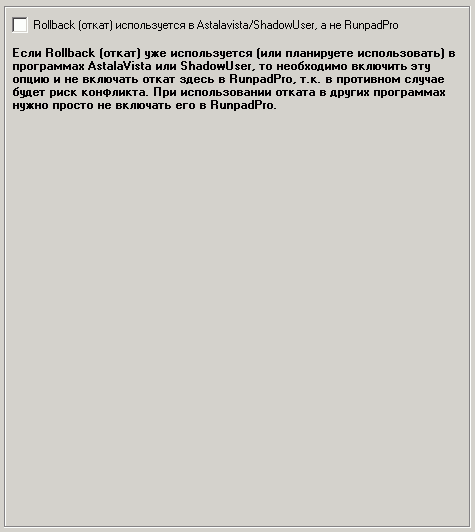

| Rollback (Откат): AstalaVista/ShadowUser |

Наиболее важные опции на этой вкладке:
Rollback (откат) используется в Astalavista/ShadowUser, а не RunpadPro
Если Rollback (откат) уже используется (или планируете использовать) в программах AstalaVista или ShadowUser, то необходимо включить эту опцию и не включать откат здесь в RunpadPro, т.к. в противном случае будет риск конфликта. При использовании отката в других программах нужно просто не включать его в RunpadPro.